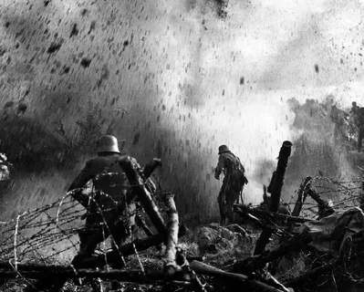
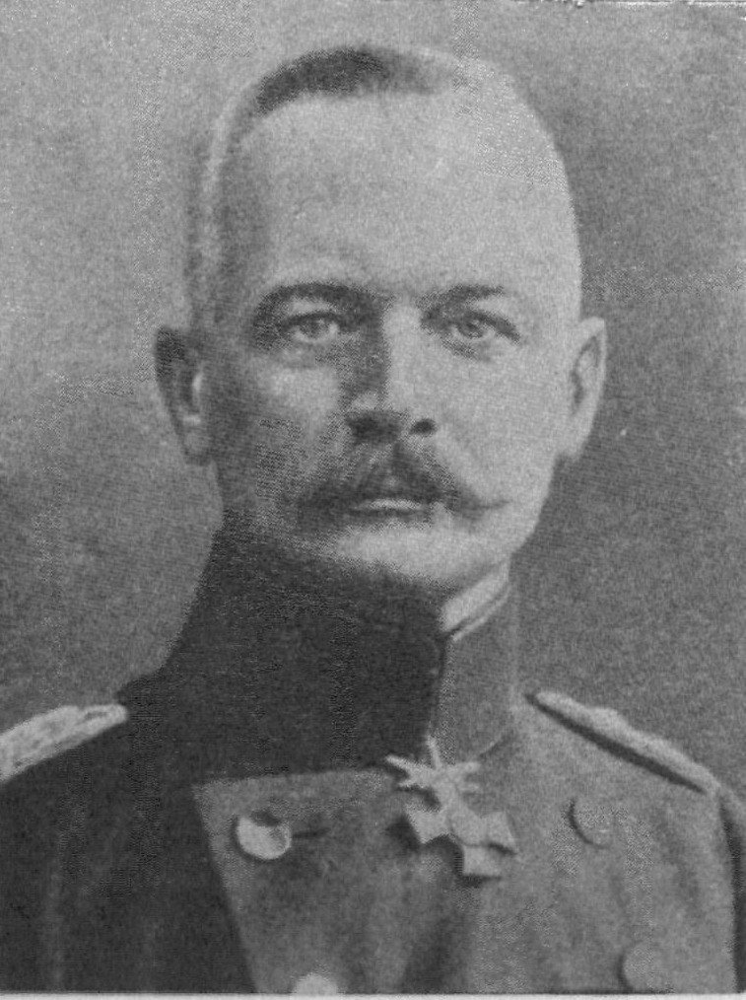
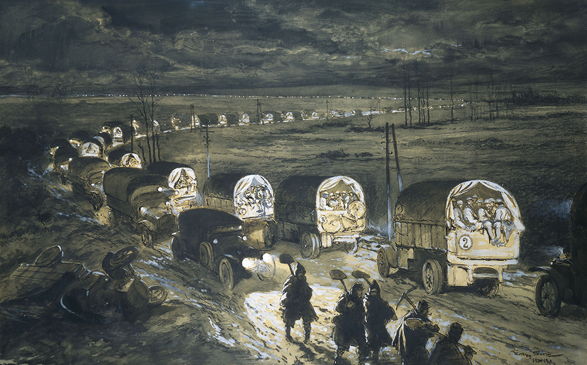

Битва при Вердене — крупнейшее сражение Первой мировой войны между Германией и Францией.
Длилась почти 10 месяцев — с 21 февраля по 18 декабря 1916 года.
Потери обеих сторон — около 1 миллиона убитыми и ранеными.
Битва при Вердене · 21 февраля — 18 декабря 1916
Символ бессмысленности и жестокости Первой мировой войны
Группа 1ОИБТС-1226
Презентует: Тимофеева София
Битва при Вердене — крупнейшее сражение Первой мировой войны между Германией и Францией.
Длилась почти 10 месяцев — с 21 февраля по 18 декабря 1916 года.
Потери обеих сторон — около 1 миллиона убитыми и ранеными.

Поле боя при Вердене

Эрих фон Фалькенгайн
Немецкое командование во главе с генералом Эрихом фон Фалькенгайном не ставило целью просто захватить город.
Немцы хотели «перемолоть» французскую армию на истощение, заставив французов бросить все свои силы на защиту стратегического Вердена.
План Германии по быстрому выводу Франции из войны провалился.
Германия — до 600 000, Франция — до 543 000 человек.
Линия фронта почти не изменилась, ни одна из сторон не продвинулась, но обе понесли потери.
Стала символом чудовищной жестокости позиционной войны.
Роль России: Наступление у озера Нарочь в марте 1916 оттянуло часть немецких сил, ослабив давление на Верден.
«Священная дорога» (Voie Sacrée — «Вуа Сакре»): Единственная дорога снабжения — «Voie Sacrée» — стала символом стойкости французской армии.

«Священная дорога»